Material Design

Un design « centré utilisateur ».
basé sur 10 principes
1. Mettre le focus sur les personnes, leur vie, leur travail, leurs rêves.
« L’équipe de Google User Experience travaille à découvrir les besoins réels de la population, y compris les besoins qu’elle ne peut pas toujours exprimer. Armé de cette information, Google peut créer des produits capables de résoudre les problèmes du monde réel et susciter la créativité de toutes sortes de gens. Améliorer la vie des gens est notre objectif. »
2. Chaque milliseconde compte.
« Rien n’est plus précieux que le temps des gens. Google se charge rapidement, grâce au code léger et aux images soigneusement sélectionnées. Les caractéristiques les plus essentielles et le texte le plus important sont placés dans les endroits les plus faciles à trouver. Les clics inutiles, les textes à saisir, et d’autres actions inutiles sont éliminées. Les tâches sont simplifiées. La vitesse est une aubaine pour les utilisateurs. Il est également un avantage concurrentiel que Google ne sacrifie pas sans raison valable. »
3. La simplicité est puissante.
« La simplicité de nombreux éléments sont les fondations d’un bon design, notamment la facilité d’utilisation, la rapidité, l’attrait visuel et l’accessibilité. Mais la simplicité commence avec la conception des fonctions fondamentales d’un produit. Google ne cherche pas à créer des produits riches en fonctionnalités, nos meilleurs designs comprennent uniquement les fonctionnalités dont les gens ont besoin pour atteindre leurs objectifs. »
4. Engager les débutants et attirer des experts
« Concevoir pour de nombreuses personnes ne signifie pas forcément la conception pour le plus petit dénominateur commun. Les meilleurs designs de chez Google semble assez simples en apparence, mais incluent de puissantes fonctionnalités qui sont facilement accessibles aux utilisateurs qui le souhaitent. Notre intention est d’inviter les débutants avec une grande expérience initiale tout en attirant les utilisateurs confirmés. »
5. Osez innover.
« L’uniformité dans le design construit la confiance pour les produits Google, elle permet aux utilisateurs d’être à l’aise et d’aller plus vite dans leur travail. Mais il est important que l’imagination transforme le design également. Google encourage les personnes innovantes et la prise de risque dans le design à chaque fois qu’elle répond aux besoins des utilisateurs. Nos équipes encouragent de nouvelles idées pour sortir et jouer d’une nouvelle façon. Au lieu de se figer, Google veut changer le jeu. »
6. Designer pour le monde.
« Le World Wide Web a ouvert toutes les ressources de l’Internet aux gens partout sur la planète. Par exemple, de nombreux utilisateurs utilisent des produits Google en se promenant avec un appareil mobile et ne sont pas assis à un bureau avec un ordinateur personnel. Notre objectif est de concevoir des produits qui sont contextuellement pertinents et orientés pour apporter du sens aux les utilisateurs. Google prend en charge les connexions plus lentes et les navigateurs les plus anciens lorsque cela est possible et Google permet aux gens de choisir l’affichage des informations (taille de l’écran, la taille de police). »
7. Les projets d’aujourd’hui feront les affaires de demain.
« Les produits Google sont également orientés pour permettre aux utilisateurs de créer de la valeur. Pour atteindre ce noble objectif, les designers travaillent avec les équipes produit et s’assurent que des considérations commerciales s’intègrent parfaitement avec les objectifs des utilisateurs. Les équipes travaillent à faire des annonces qui sont pertinentes, utiles, et clairement identifiables comme des annonces. Google prend également soin de protéger les intérêts des annonceurs et les autres personnes qui dépendent de Google pour leur marché. »
8. Le plaisir des yeux sans distraire l’esprit.
« Si les gens regardaent un produit Google et se disent: « Wow, c’est beau! » L’équipe Expérience utilisateur est heureuse ! Une première impression positive fait en sorte que les utilisateurs sont à l’aise et cela leur assure que le produit est fiable et professionnel. Une esthétique minimaliste est employée pour la plupart des produits Google car un endroit propre, sans encombrement permet de ne pas détourner les utilisateurs de leurs objectifs. Visuellement attrayantes, les images, les couleurs et les polices sont équilibrées par rapport aux besoins pour la vitesse, pour le texte analysable, et pour une navigation facile. Pourtant, « l’élégance simple » n’est pas la meilleure solution pour chaque produit. Selon l’audience et le contexte culturel, un produit de Google doit en tout les cas, plaire aux utilisateurs et améliorer la convivialité qu’ils ont avec ce produit. »
9. Soyez digne de la confiance des gens.
« Un bon design peut faire une bonne partie du chemin pour gagner la confiance des personnes qui utilisent les produits Google mais pour établir une confiance encore plus grande, il faut aller plus loin. Par exemple, faire en sorte que l’interface soit efficace et professionnelle, que les actions sont facilement réversibles ou encore que les annonces soient clairement identifiées, permet que les utilisateurs ne soient jamais désagréablement surpris. En outre, les produits Google s’ouvrent au monde en incluant les liens vers les concurrents et en encourageant les contributions des utilisateurs. Un plus grand défi encore, consiste à veiller à ce que Google démontre du respect pour le droit des utilisateurs pour qu’ils aient le contrôle sur leurs propres données. La plus grande phrase pour laquelle Google doit être à la hauteur reste leur devise : « Don’t be evil ». »
10. Ajouter une touche humaine.
« Google comprend un large éventail de personnalités, et nos design ont une personnalité également. Les éléments de texte et le design sont sympathiques, excentriques, intelligents – et pas ennuyeux, étroits d’esprit, ou arrogant. Google parle directement aux personnes et offre la même pratique à tout le monde, comme quelqu’un qui pourrait aider un voisin qui a posé une question. Google ne sait pas tout, et n’est pas parfait. Nos produits demandent donc des commentaires qui permettent d’agir sur Google. »
MATERIAL DESIGN
Standardisation d’un langage
Simplifier la conception des apps pour les développeurs avec des Guidelines spécifiant des règles d’ergonomie, de transitions animées, d’effets visuels et des gestuelles tactilesMATERIAL DESIGN
Un langage visuel pour les utilisateurs qui synthétise:
- les principes classiques d’une bonne conception
- l’innovation visuelle
- les possibilités technologiques et scientifiques

Les 3 ingrédients du Material Design
La matière comme métaphore
Un ensemble de règles inspiré de l'encre et du papier.

Règle N°1 : Une epaisseur uniforme pour tous les elements (1dp)


Règle N°2 : Les ombres résultent naturellement de l'élévation relative (position z) entre les éléments matériels.
Règle N°3 : Le contenu est affiché sur le support peut prendre nimporte quelle forme ou couleur,mais ne pas ajouter d'épaisseur à la matière.
Règle N°4 : Le contenu peut agir indépendamment du support, mais il est limité dans les limites du support.
Règle N°5 : Le support est solide.Les événements d'entrée ne peuvent pas passer à travers le support.


Règle N°6 : Plusieurs éléments ne peuvent pas occuper le même point dans l'espace en même temps.


Règle N°7 : Un élement ne peut pas passer à travers un autre élement.Par exemple, une feuille ne peut pas passer à travers une autre feuille lors du changement d'altitude.
Un ensemble de règles inspiré de l'encre et du papier.
Mais avec quelques règles de magie dans les transformations.
Règle N°8 : Un élément peut changer de forme.
Règle N°9 : Un élément grandit et rétrécit seulement le long de son plan.
Règle N°10 : Un élément ne se plie pas et ne se deplie pas.
Règle N°11 : Les éléments peuvent se joindre ensemble pour devenir un seul élément.
Règle N°12 : Lorsque vous divisez un élément celui-ci peut guérir. Par exemple, si vous supprimez la partie centrale d'un élément, les extrémités de l'élément peuvent constituer un nouvel élément.
Règle N°13 : Un élément peut être généré ou détruit spontanément.
Règle N°14 : Un élément peut se déplacer le long d'un axe quelconque.
Règle N°15 : L'axe Z est généralement le résultat de l'interaction de l'utilisateur avec l'élément.
Un graphisme vif et intentionnel
Tout est mis en œuvre pour mettre en avant l’action principale à réaliser.
Le Material Design joue sur les contrastes, les couleurs, les hiérarchisations de l’information, via un item graphique mis en valeur, des typographies contrastées, une lisibilité du message,….
Le Materiel Design se base sur un environnement en trois dimensions contenant de la lumière,de la matière, et des ombres portés.

L'axe z est utilisé pour la stratification et non pas pour la perspective.
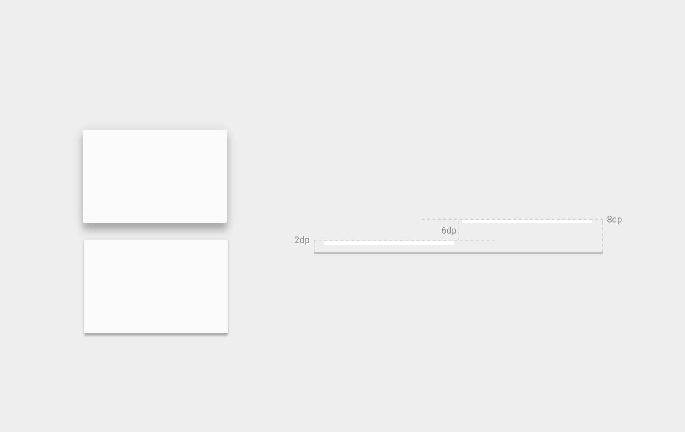L'altitude différe d'un élément à l'autre et d'un périphérique à l'autre.


La façon dont vous organisez les objets ou les collections d'objets dans une application détermine la façon dont ils se déplacent les uns par rapport aux autres. Les objets peuvent se déplacer indépendamment les uns des autres ou être contrainte par des objets plus élevés dans la hiérarchie.
Comme le rouleau de feuilles parent, le bouton surélevé (son enfant) défile hors de l'écran avec elle.
Exception: Alors que les cartes d'enfants défilent hors de l'écran avec le rouleau parent. Le bouton d'action flottante reste en place car son parent est l'écran.
Afin d'accroitre la lisibilité,Google préconise le choix d’une couleur majeure accompagnée de 2 nuances découlant de cette même couleur et complétées par une tonique choisie dans une palette de couleurs différentes. L’usage de la tonique étant préconisé pour le signalement des boutons d’interaction principaux et les liens.

La couleur tonique doit être utilisé pour le bouton d'action flottante et des éléments interactifs, tels que:
- Les champs de texte et les curseurs
- Les barres de progression
- Commandes de sélection, boutons et curseurs
- Des liens
 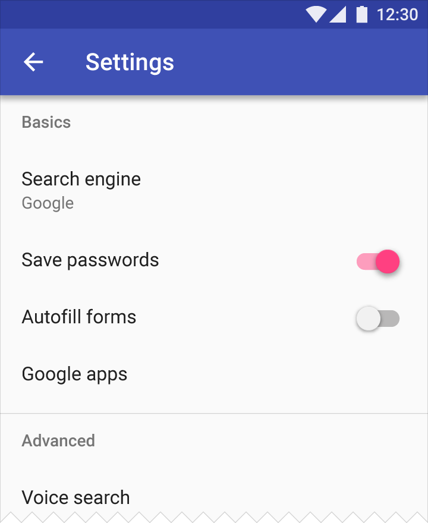
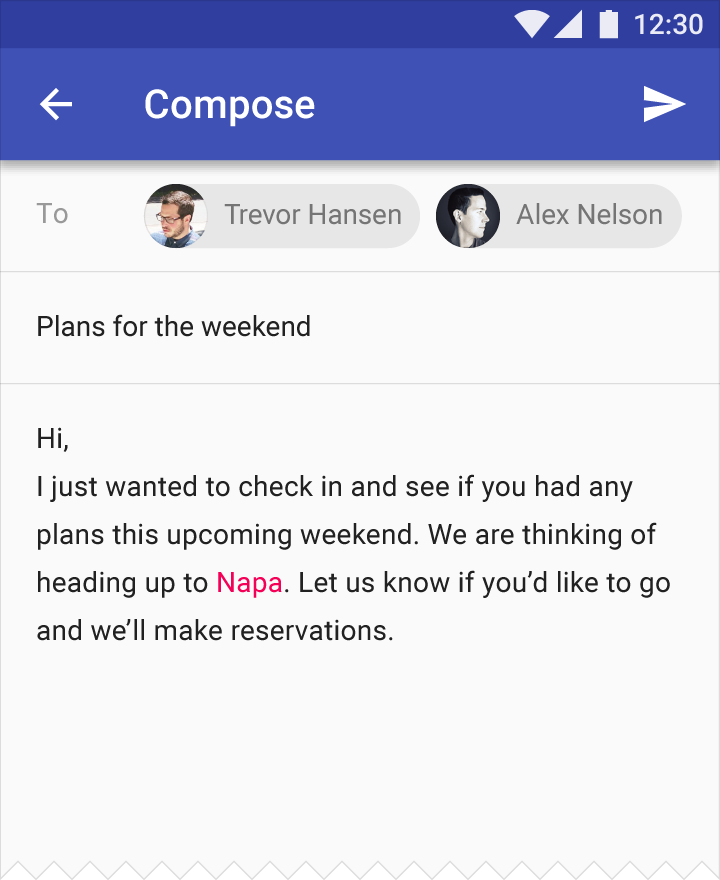
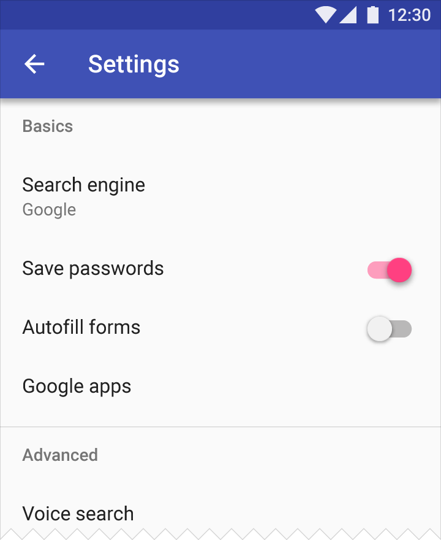
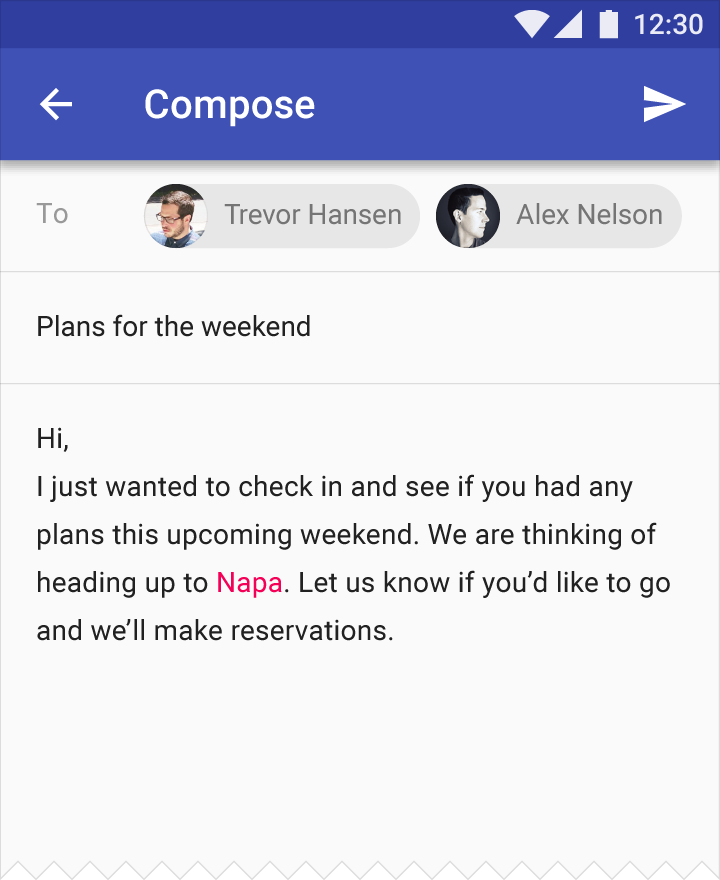
Google porte également une attention particulière aux contrastes de couleurs


Texte et couleurs de fond
Le Material Design se base également sur l'usage d'icones
Pour faciliter les actions des utilisateurs Google préconise une taille d'icone de 48dp, avec bords d'1dp.
L'utilisation d'images et de photos est également guidée
On utilisera des images qui racontent une histoire, spécifiques au contexte ,lumineuses qui apportent de la joie à l'utilisateur


Pour la typoghaphie, Google recommande sa police d'impression Roboto
Elle est légèrement plus large et arrondie que les autres polices, ce qui lui donne plus de clarté et de la rend plus lisible.

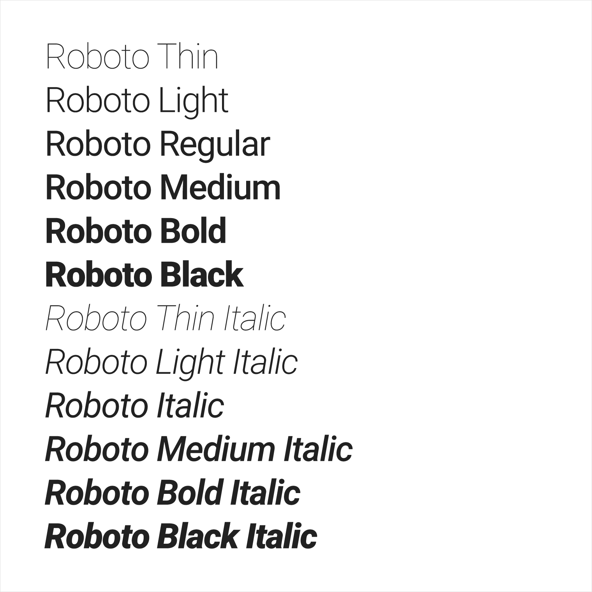

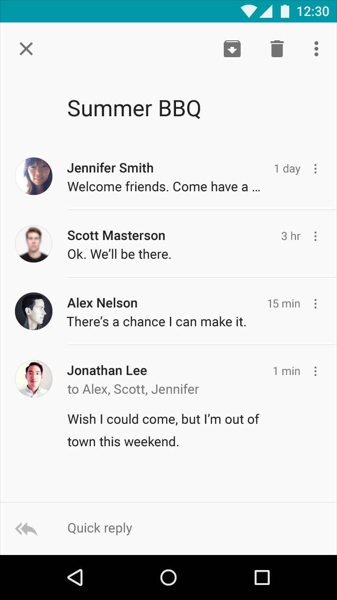 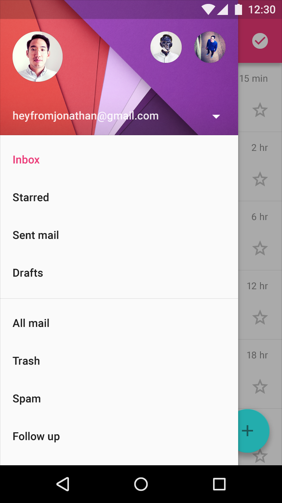 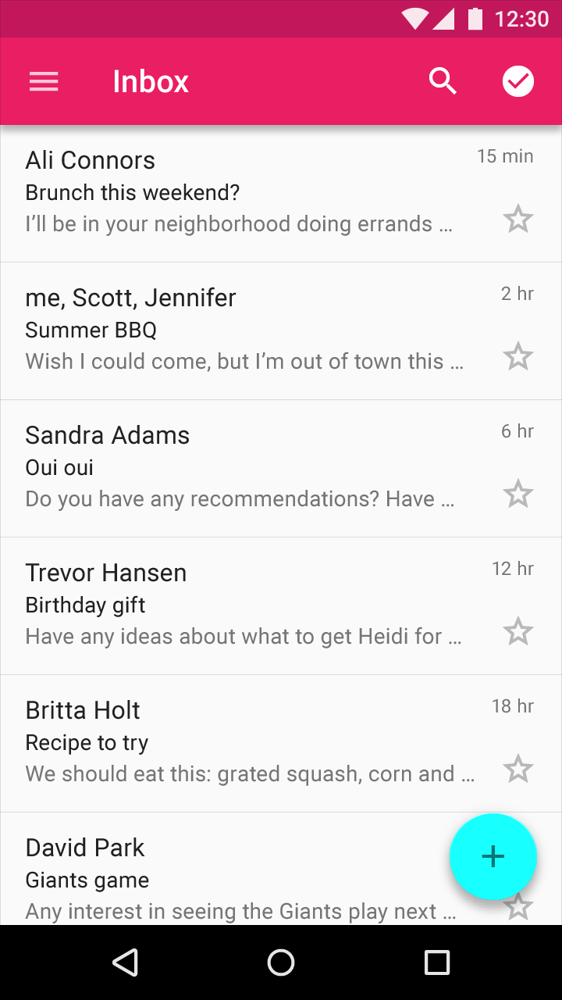


Le texte doit être compréhensible par tous, partout, quelle que soit leur culture ou leur langue.
S'adresser à l'utilisateur
Deuxième personne, «vous» ou «votre» : utilisez ce style conversationnel pour la plupart des situations, comme si l'application parle directement à l'utilisateur.

S'adresser à l'utilisateur
La première personne, «je» ou «mon» : Dans certains cas, vous devrez peut-être utiliser cette forme d'adresse pour souligner la participation de l'utilisateur du contenu ou des actions.
S'adresser à l'utilisateur
Éviter de mélanger «moi» / «mon» avec «vous» / «votre». Il peut causer de la confusion pour voir les deux formes d'aborder l'utilisateur dans le même contexte.
S'adresser à l'utilisateur
Évitez le pronom "nous" : faite le focus sur l'utilisateur et ce qu'il peut faire avec votre application, plutôt que ce que vous ou votre application est en train de faire pour l'utilisateur.
S'adresser à l'utilisateur
Soyez concis
S'adresser à l'utilisateur
Utilisez un langage simple, direct qui est facile à comprendre par les utilisateurs.
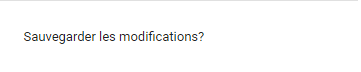 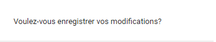Le mouvement créateur de sens
Le mouvement qui renforce l’expérience utilisateur est ici considéré comme le moteur principal.
Pour aller plus loin
Google met à disposion des nombreux patterns qui repondent aux problématiques des concepteurs d'applications sur le site https://material.google.com
messages d'erreurs, navigations, messages de confirmation, notifications, formats des données...
Pour aller plus loin
Google met à disposion de nombreux modèles de composant sur le site https://material.google.com
grilles, listes, cartes, boutons, menus, barre de navigations, boites de dialogue, dates pickers...